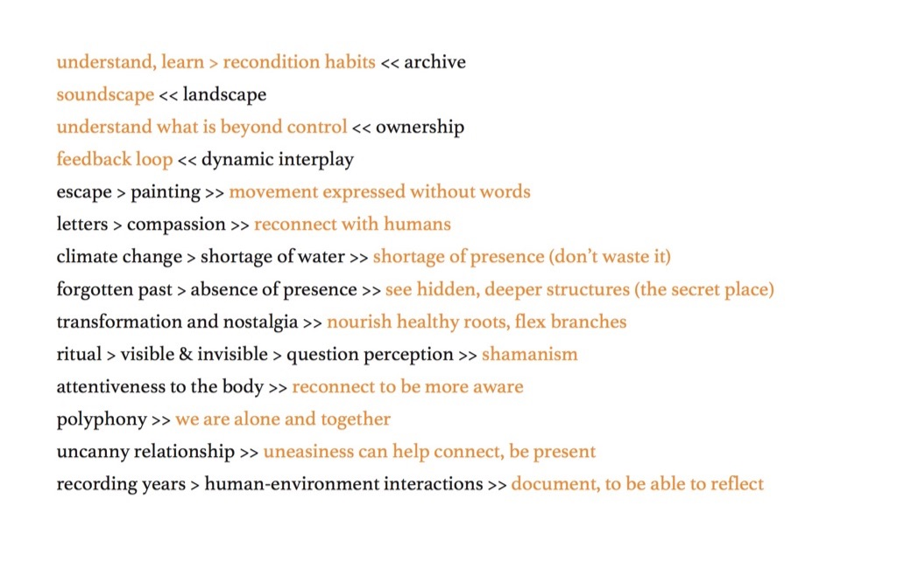

Gave a presentation at Kelcy Davenport’s ‘The Archive and the Contested Landscape’ symposium, which was part of the 2018 Festival of Ideas, Cambridge. The presentation focused on the relationship between the key ideas behind the event and my BCMI reseach.

One slide:

All slides here.